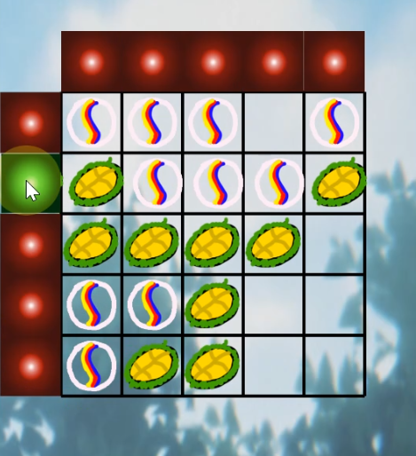
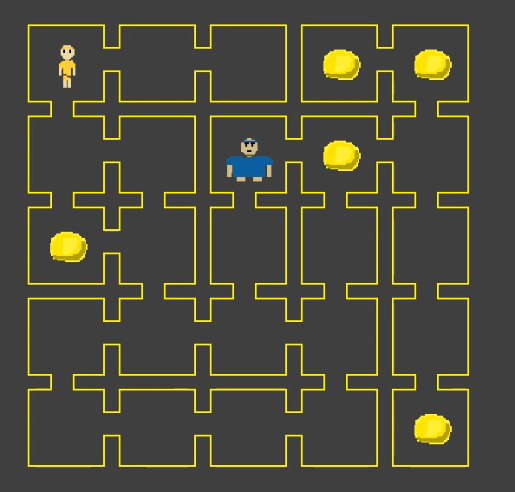

Here is my development cycle!

Gula-Gula Durian ~2024
- Based in Android Studio code, written in Java
- Based off the classic SLIDE64 game found in the Commodore 64
- Playable music and sound effects that are coupled with smooth moving objects
- Settings can be changed and customizable to user's liking
- Attractive Splash Screen
- The code that references this game can be found here!

Goliath Strikes Again ~2023
- Written purely in Java, uses many object oriented programming
- Comes two player and single player mode
- Intelligent computer AI that will track which direction you are moving
- Customizable music and sound effects
- Small size, playable on different devices

VA Visualiser ~Present
- This game is based off the popular Connect4 Board Game
- Written in Java, playable on many different devices
- Still a work in progress, finishing up tokens moving down and taking space
- Contact me if you would like to work together on this project!
Future Projects?
- This game is based off the popular Connect4 Board Game
- Written in Java, playable on many different devices
- Still a work in progress, finishing up tokens moving down and taking space
- Contact me if you would like to work together on this project!